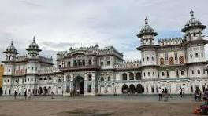

The most followed religion in Nepal is Hinduism, and the
Pashupatinath Temple, the world's largest temple of Lord Shiva,
located in Kathmandu, attracts many pilgrims and tourists. This is
arguably the most famous Hindu temple in the Indian Subcontinent.
Adjacent to the temple, lies a crematorium where bodies are burned
to ashes. Pashupatinath is also listed in UNESCO heritage sites.
Other Hindu pilgrimage sites include the temple complex in
Swargadwari in the Pyuthan district; Janaki Mandir in Janakpurdham
in Mithila region; Lake Gosainkunda near Dhunche; the temples at
Devghat; Kalinchowk Bhagwati Temple in Dolakha; Manakamana temple in
the Gorkha District; Pathibhara near Phungling; Galeshwordham Myagdi
and Mahamrityunjaya Shivasan Nepal in Palpa District where the
biggest metallic idol of Lord Shiva is located.Buddhism is the
second largest followed religion in context of Nepal. The World
Heritage Site at Lumbini, which is considered to be the birthplace
of Gautama Buddha, is an important pilgrimage site. Another
prominent Buddhist site is Swayambhunath, the Monkey Temple, in
Kathmandu. Ambikeshwori Temple, Dang is a Shaktipeetha which is
supposed to have emerged due to the falling of right ear of Satidevi
according to the Swasthani Purana. Dang valley is a sacred place for
Hindus as well as other religions. Kalika and Malika Devi in
Chillikot hill, Ambekeshawori temple, Krishna temple, Dharapani
temple are among the sacred places in Dang district. Chillikot hill
is also a good place for sightseeing and also an ancient palace of a
king.Muktinath is a sacred place for Hindus as well as Buddhists.
The site is located in Muktinath Valley, Mustang district.
Badimalika temple in Bajura District, Gadhimai Temple in Bara
district, Halesi-Maratika Caves in Khotang. Bhageshwori Mandir in
Nepalgunj. Side view of the Bhageshwori Mandir Bhagwati Temple in
Rajbiraj are also some popular temples in Nepal.

